k-Day 096｜又回來了

早上被鴨子聲叫醒，四五隻在帳篷旁邊飛得很愉快。白天熱得越來越快，起身收拾帳棚時天已經大亮。
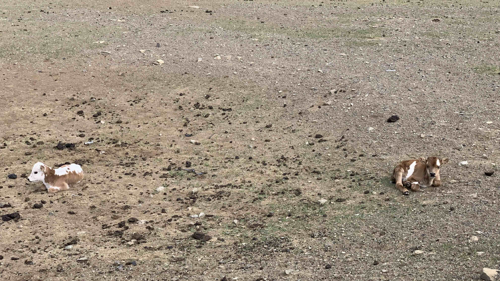
出發不久，在路邊涵洞看到三隻小牛躲在陰影睡得很香。看到我接近時兩隻小牛坐起來，表情相當淡定，另一隻藏在涵洞下的，懷疑已經睡到流口水。
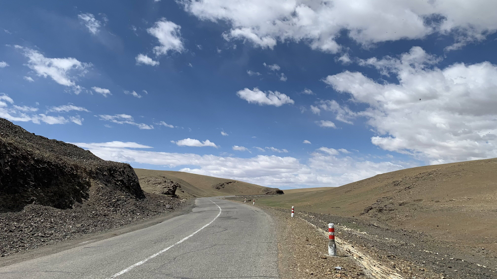
和前兩天一樣，沿著山路南下，過了山丘後就是確實的南方路線。
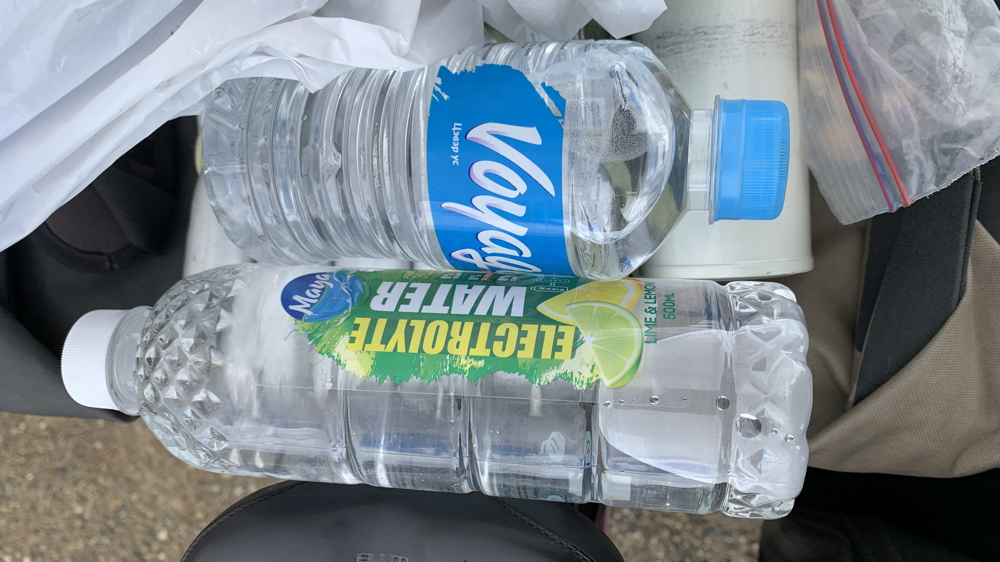
也許是沿途沒什麼城鎮，連續三天獲得飲料。
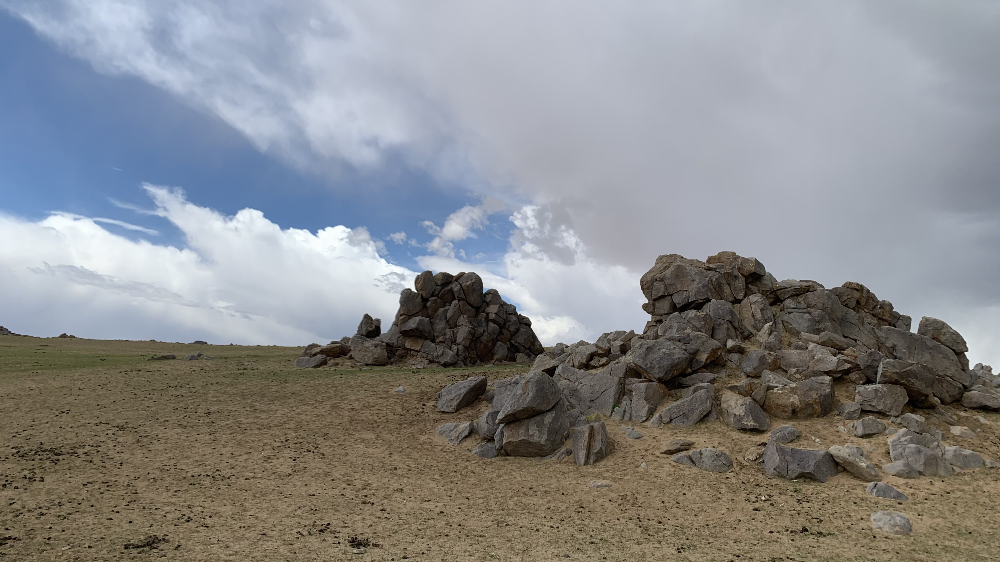
爬坡時陣風越來越強，趕緊牽著車躲進路邊的大石堆背風處。
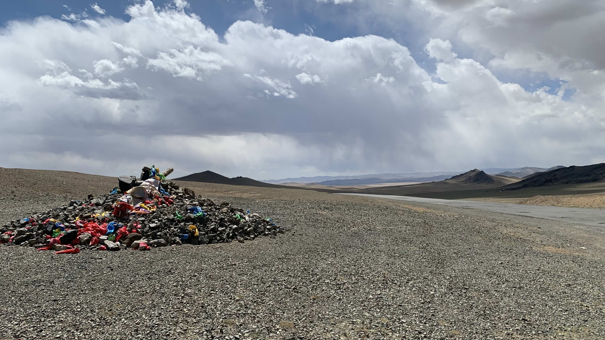
然而風勢沒有要停止的意思，躲了一陣還是認份地回到路上，吹著風在起伏的山丘上移動。
爬到高處，看到一座倒臥的敖包。嗯，風就是這麼大。過了這個山頭就正式離開草原了。
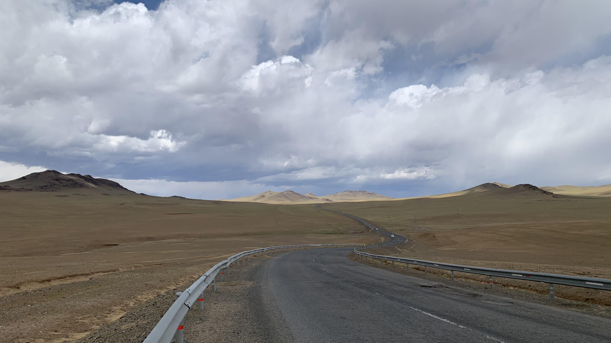
草坡變成黃色。
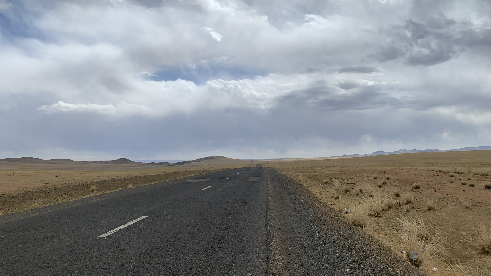
黃色的乾草叢也出現了。
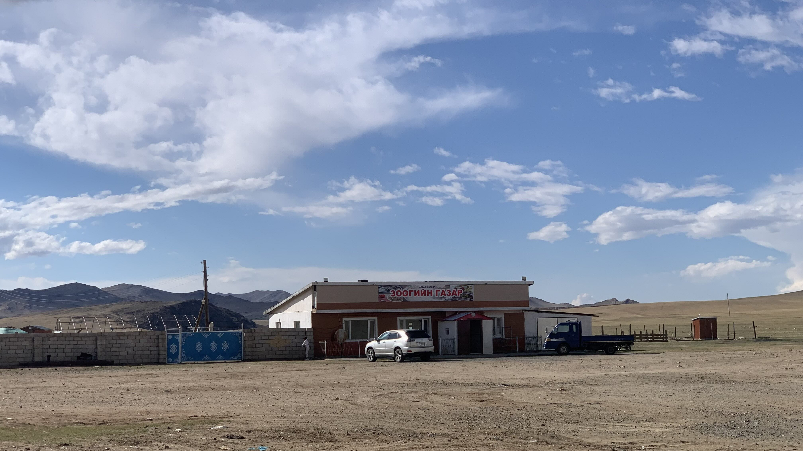
風勢過大，下午兩點躲進路邊出現的餐廳點了一份羊肉麵。
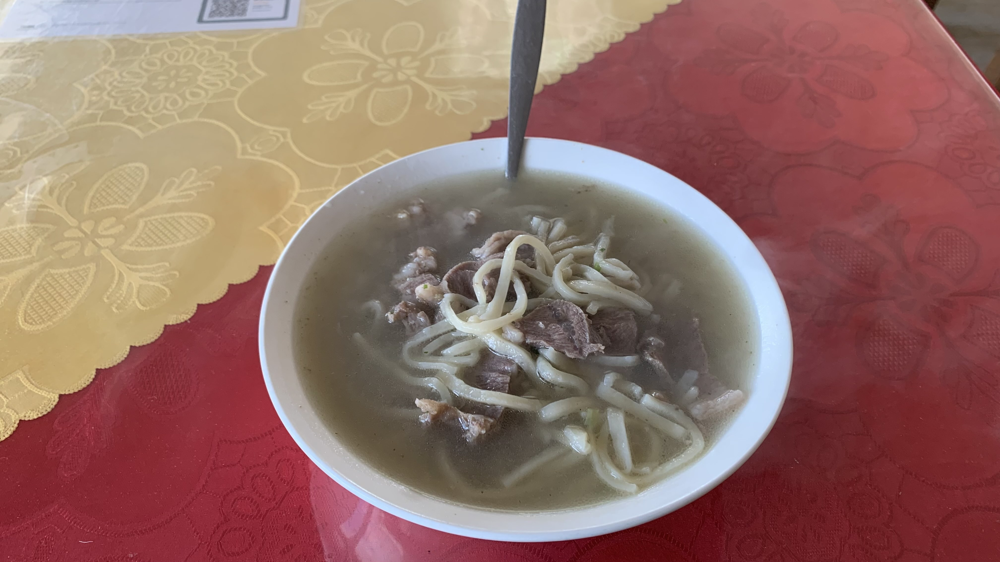
肉很新鮮，稱不上好不好吃，和我自己煮的東西一樣，偶一為之可以，吃久了可能會有點憂鬱。
餐廳裡有個小妹妹，一直試圖從各種縫隙偷窺我，也許是缺乏娛樂設施的緣故，他前後變換的窺視地點包括：房間門縫、餐廳窗戶、廚房後門、餐廳外的鐵門、圍籬、大門。
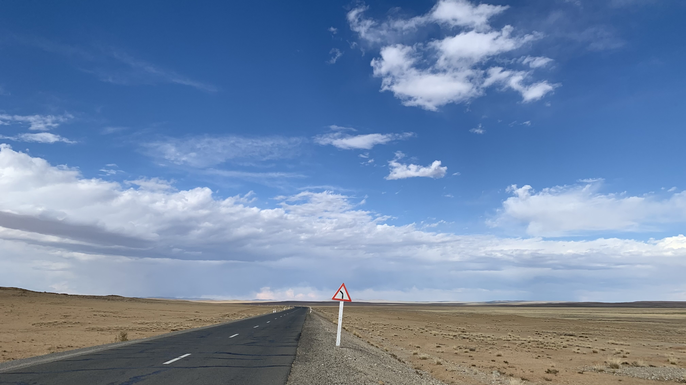
離開時想問老闆能否讓我裝一些水，但對方似乎聽不懂我在說啥。只好搖搖手出門離開。風還是很大，小妹妹還是躲在籬笆後，露出一顆眼睛盯著正在牽車的我。
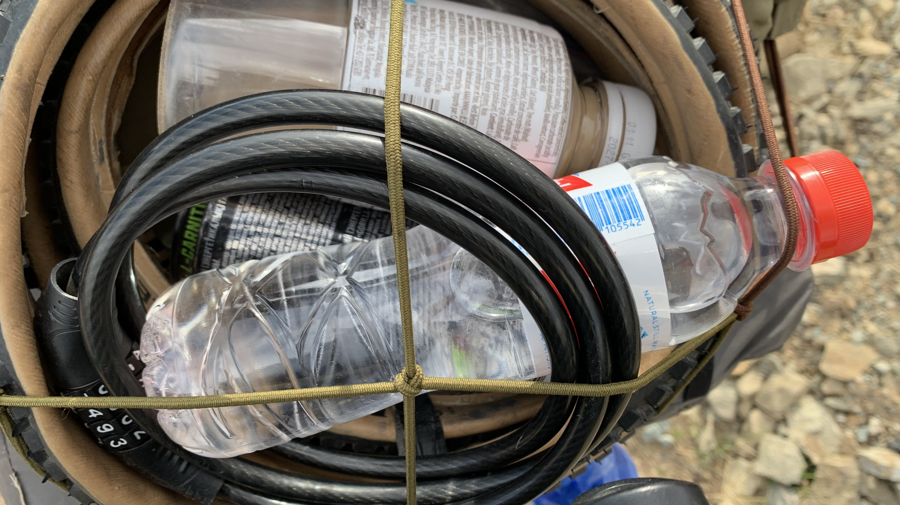
低頭噴汗時有輛車開過來，遞了一瓶礦泉水給我。前貨架上已經滿載，全都是路過的人給的善意。
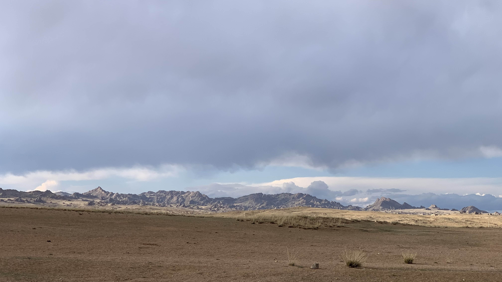
遠方出現一座帥氣的山，地貌很明顯地跟早上不同。
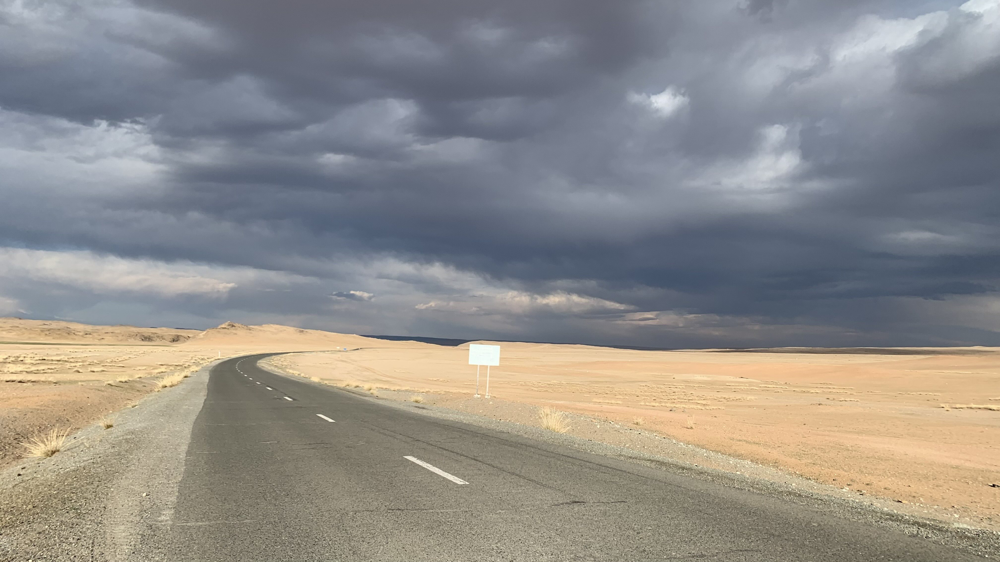
黃沙混著紅土，搭配白色的廣告看板。
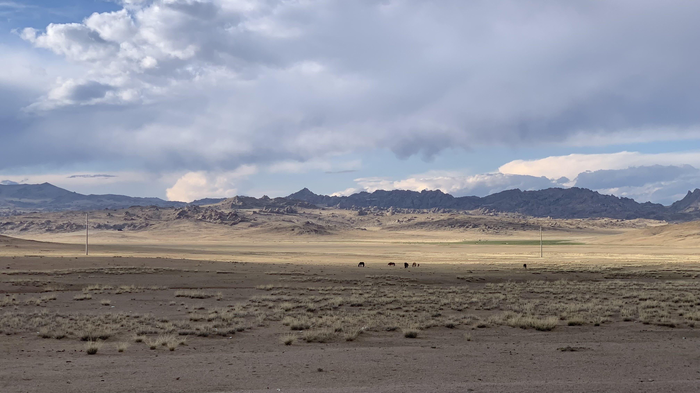
坐在這片山前面，興起「明早出帳篷我要看到這座山」的心情。然而今天吹的是北風，晚上風力會越來越強。
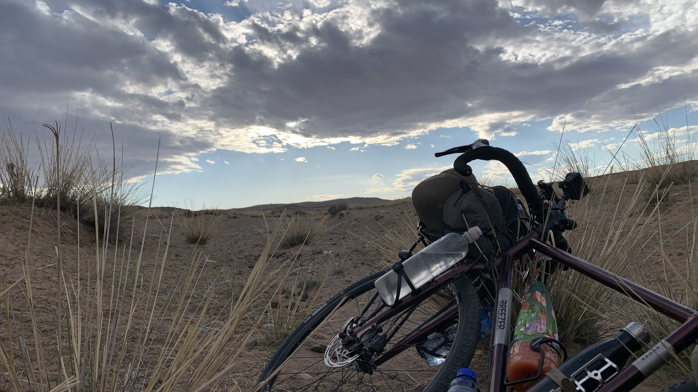
最後找了一片稍微遠離道路的沙堆，稍微能阻擋一點西北風。
縮進帳篷後，聞到一點牛糞味。青草的氣味消失了。
晚上十一點，突然想起必須確認一下，拉開外帳拉鍊，從縫隙裡張望，乾燥的空氣，星星又回來了。
今日花費： 羊肉麵 18000元